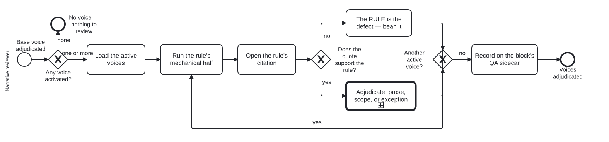

Generated from
cat-harness/processes/content/voice-review.bpmnbygen-processes-viz.ts— do not edit here. All processes
Process_VoiceReview · advisory · 6 step(s)
The voice axis: load whichever editorial voices are active, run each rule’s mechanical half, and decide — for each finding — whether the prose is wrong, the rule does not apply to this content, or this block is a stated exception.
You are in this process after the base voice has been adjudicated, and only if a voice is active at all: the first gateway ends the process honestly when none is, rather than reporting a clean review of nothing.
Three outcomes, all legitimate, and the third is the one that needs recording: an exception without a reviewer entry is indistinguishable from a rule nobody ran. There is also a fourth path the diagram draws deliberately — if the rule’s own citation does not support it, the RULE is the defect, and that becomes a bean rather than a finding against the prose.

| lane | role | what it does here |
|---|---|---|
| Narrative reviewer | narrative-reviewer |
Runs every active voice to completion rather than stopping at the first, because rules from separate voices are UNIONED rather than merged — two voices can both flag capitalisation and both findings must stand, so folding voice N+1’s pass into voice N’s would lose which voice raised what. At each citation, this lane also has to route the defect to the right place: a rule its own citation does not support goes to Task_RuleIsWrong as a finding against the VOICE, never into Task_Adjudicate, which only ever judges the block. |
Every one of the 6 step(s) is documented.
| step | lane | skill / sub-process | what it does |
|---|---|---|---|
Load the active voicesTask_LoadActive |
Narrative reviewer | voice-overlay-review |
The activated set only, never everything shipped. An id naming no shipped voice is an error rather than a skip — a folio that believes it is applying a voice and is applying nothing has the cleanest-looking output of the three. |
Run the rule’s mechanical halfTask_MechanicalHalf |
Narrative reviewer | voice-overlay-review |
Whatever patterns and terminology the rule carries. A judgementOnly rule has no mechanical half by declaration, which is different from nobody having written one yet. |
Open the rule’s citationTask_OpenCitation |
Narrative reviewer | voice-overlay-review |
Every rule resolves to a real library/ section or a KG node, and carries the quote it was read from. Opening it is what lets a reviewer say WHY the rule applies — and it is the only way to catch a rule that misread its own source. |
The RULE is the defect — bean itTask_RuleIsWrong |
Narrative reviewer | voice-overlay-review |
A rule its own quote does not support is a finding against the voice, not against the block. Measured precedent: voice-editorializing flags “clearly”, and the exemplar the Milnor gate is named after uses it fourteen times as proof economy (bean 2t41). |
Adjudicate: prose, scope, or exceptionTask_Adjudicate |
Narrative reviewer | calls Criterion adjudicationvoice-overlay-reviewadjudication |
The same three outcomes as the base voice axis. The register is wrong for this block (fix the prose); the rule does not apply to this content (scope it on the voice, one edit rather than ten overrules); or the rule applies and this block is an exception (a reviewer entry saying why). |
Record on the block’s QA sidecarTask_RecordOnSidecar |
Narrative reviewer | voice-overlay-review |
Through qa-merge-findings, so the icon and the published witness agree with the decision. The adjudication LEADS the criterion and the script entry is kept beneath it: a disagreement between a checker and a reviewer is information. |
Every one of the 3 decision(s) is documented.
| decision | what decides it | branches |
|---|---|---|
Any voice activated?GW_AnyActive |
Is any voice activated for this block, beyond the base voice already adjudicated? none ends with nothing to review; one or more loads the active voices. |
none → No voice — nothing to review one or more → Load the active voices |
Does the quote support the rule?GW_QuoteSupports |
Answered by opening the rule’s citation: does the quoted source support the rule? no means the rule itself is the defect and is beaned; yes goes to adjudicating the prose, the rule’s scope or an exception. |
no → The RULE is the defect — bean it yes → Adjudicate: prose, scope, or exception |
Another active voice?GW_MoreVoices |
Is another active voice left to review? yes runs that voice’s mechanical half; no records the results on the block’s QA sidecar. |
yes → Run the rule’s mechanical half no → Record on the block’s QA sidecar |